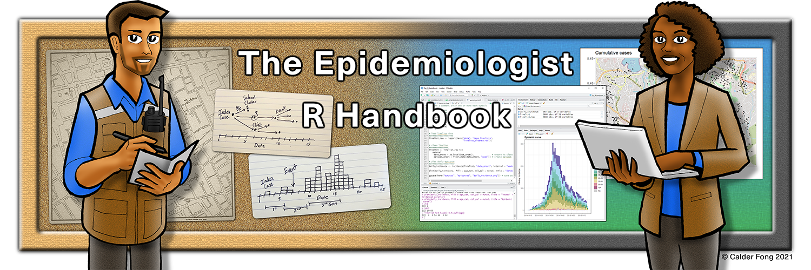

¿Quién dijo miedo a programar?
Programar puede resultar un poco intimidante en un principio, si no se ha hecho antes.
En el pasado este miedo estaba bastante justificado, puesto que era necesario un alto nivel de capacitación técnica para dominar los lenguajes de programación, que solían ser complejos, de bajo nivel y con sintaxis muy técnica.

R es un lenguaje bastante intuitivo, cuya sintaxis se asemeja bastante al lenguaje inglés hablado. Además, es bastante tolerante con espacios, indentaciones y sangrías, tipados de variables y demás quebraderos de cabeza propios de otros lenguajes más exigentes.
Hoy en día están disponibles tres grupos de recursos extremadamente útiles, que nos facilitarán avanzar rápidamente en el proceso de aprendizaje del lenguaje R:
- La inmensa cantidad de material gratuito, o a muy bajo coste, de todos los niveles, para obtener formación
- La presencia de una extraordinaria comunidad de usuarios, siempre dispuesta a colaborar
- La disponibilidad universal de las herramientas conversacionales potenciadas por IA, como chatGPT o Bing
Material gratuito para formación en R
Hay infinidad de material gratuito para formarnos en R, a todos los niveles.
Libros en español
 |
Un buen sitio para empezar es el libro R Para Ciencia de Datos, que está traducido al español. Este libro contiene los fundamentos del análisis de datos, con un formato muy parecido al de éste taller, utilizando funciones del paquete tidyverse. Es un libro sencillo, ameno y fácil de seguir. |
|  | Un segundo manual, enfocado en el ámbito sanitario, es R para la epidemiología aplicada y la salud pública. Es un libro desarrollado por profesionales de la OMS y de Médicos sin fronteras, y tiene como alumno objetivo a alguien sin conocimientos de estadística, programación y R. Permite alcanzar buen nivel, con aplicaciones directas al campo de la salud. |
| R Cookbook, 2nd Edition (English). Está en inglés, pero es muy útil para buscar cómor realizar tareas concretas. |
La comunidad de R
Es impresionante la cantidad de recursos, redes de apoyo, competiciones, juegos, eventos y buen rollo que destila la comunidad de usuarios de R. Como ejemplos, valgan estos tres:
 |
La red global R-ladies, una federación de asociaciones de programadoras de R. Sus recursos educativos son muy buenos |
 |
R-bloggers. Es una web que reúne los mejores artículos que se publican sobre R a nivel mundial |
| Reto tidytuesday: Cada martes, se lanza un reto para ordenar datos, y se muestran los resultados al final del día. Lo siguen cientos de personas, y es una herramienta educativa de gran calidad, al permitirnos evaluar diversos caminos para un mismo problema. |
Cursos a bajo coste sobre R
Existen cursos de R de nivel básico y medio, en formato MOOC, gratuitos y en español Por ejemplo
| Docente | Curso |
|---|---|
| Aprende R en 90 minutos | |
| MOOC Introducción a R. |
También, por bajo coste, se puede acceder a plataformas de formación online, como:
| Plataforma | Curso |
|---|---|
 |
Udemy |
 |
Coursera |
Las plataformas de formación online, como o ofrecen múltiples cursos, de buena calidad.
En general, Coursera se enfoca a certificaciones profesionales de Universidades o empresas como IBM, y sus cursos son algo más caros. Por otro lado, Udemy tiene una oferta mucho mayor, y tiene una política de ofertas muy bien distribuida a lo largo del año.
Uso de herramientas potenciadas con IA para programación
Las IA actuales no nos solucionan todos los problemas, pero sí nos quitan el miedo a la página en blanco. Permiten crear estructuras de pseudocódigo, que podemos utilizar como plantilla.
Veamos un ejemplo:
Imaginemos que queremos hacer el siguiente análisis:
- Queremos cargar en R una base de datos que tenemos en formato
MS Excel - De esta base, queremos filtrar algunas observaciones
- Tras ese filtro, queremos seleccionar algunas variables y descartar el resto
- Por último, queremos que agrupe los datos según los niveles de un determinado factor y obtener un resumen de los resultados
- Como postre, nos gustaría que el formato de la tabla fuera bonito, para poder reutilizarla.
Como no sabemos cómo hacerlo, se lo vamos a preguntar a Bing. Atención al estilo de pregunta:
’ Hello, I am a data scientist. I need r code to load some excel data, filter some observations, select some variables, group them by a factor, and summarise them. I want to get a beautiful table’
Y aquí está la respuesta